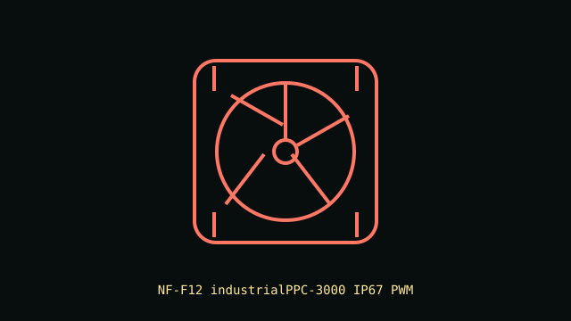

[ IDENTIFIED SKU // NF-F12 industrialPPC-3000 IP67 PWM ]
Noctua NF-F12 industrialPPC-3000 IP67 PWM
High-speed 120 mm sealed industrial PWM fan with a 3000 RPM maximum rating and focused-flow frame design.

Recorded specifications
| Exact part | NF-F12 industrialPPC-3000 IP67 PWM |
|---|---|
| Frame / thickness | 120 × 120 × 25 mm |
| Speed / airflow / pressure / noise | 750–3000 RPM; up to 186.7 m³/h; 7.63 mm H₂O maximum static pressure; 43.5 dB(A). |
| Bearing | SSO2 self-stabilizing oil-pressure bearing |
| Electrical / control | 12 V DC; 0.55 A maximum input current; 4-pin PWM connector. |
| Case / radiator compatibility | Standard 120 mm case/radiator hole pattern, 25 mm depth. Check screw length, current capacity and vibration clearance. Its high speed and sound output are unsuitable for many quiet consumer builds. |
Installation notes
Use a PWM-rated controller with adequate current headroom; the fan must not be powered from an ARGB header. The IP67 fan rating does not extend to the plug or connected system.
Manufacturer sources
- Noctua product page — NF-F12 industrialPPC-3000 IP67 PWMManufacturer specifications and exact 3000 RPM sealed model details.
- Noctua technical data sheet — NF-F12 industrialPPC-3000 IP67 PWMManufacturer technical data for this SKU.